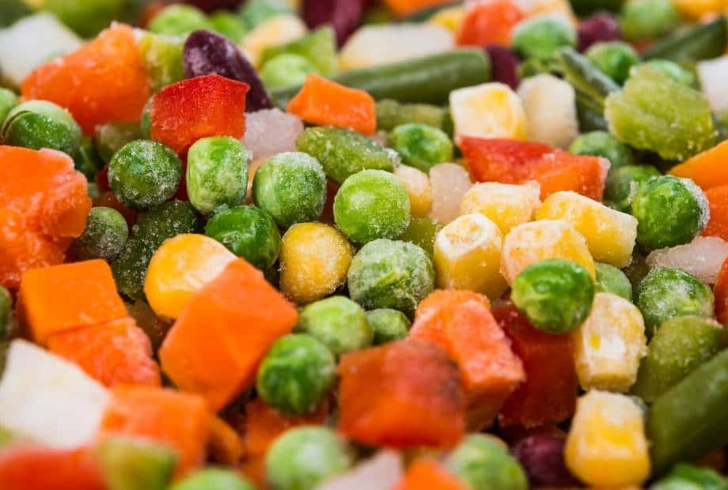

Frozen Vegetables

The best veggies around!
Frozen veggies are quite amazing. In my humble opinion they are far superior to fresh veggies.
You don't even have to wash them, just heat them up or cook them and you're good to go!
Ingredients
How to Cook
- First, you take the bag of frozen veggies out of the freezer.
- Next, you use your eyes and read the directions on the bag.
- Finally after following the directions on the bag, you will have your vegetables cooked and ready to enjoy!
Back to main page